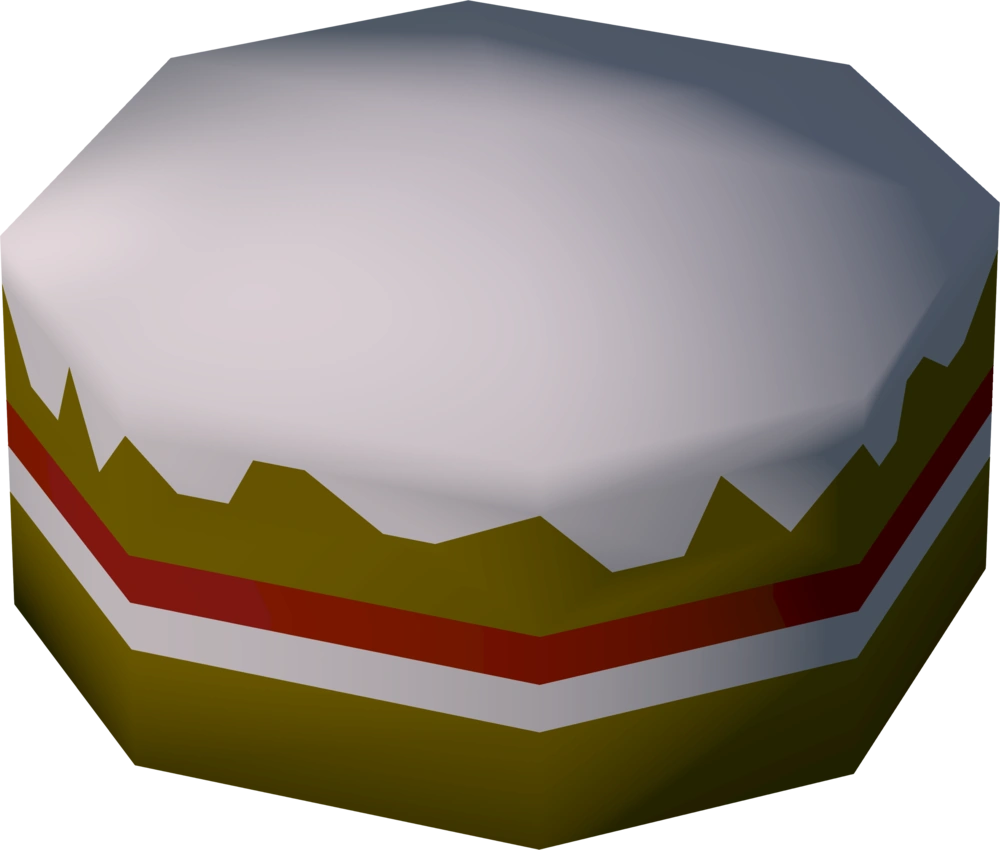
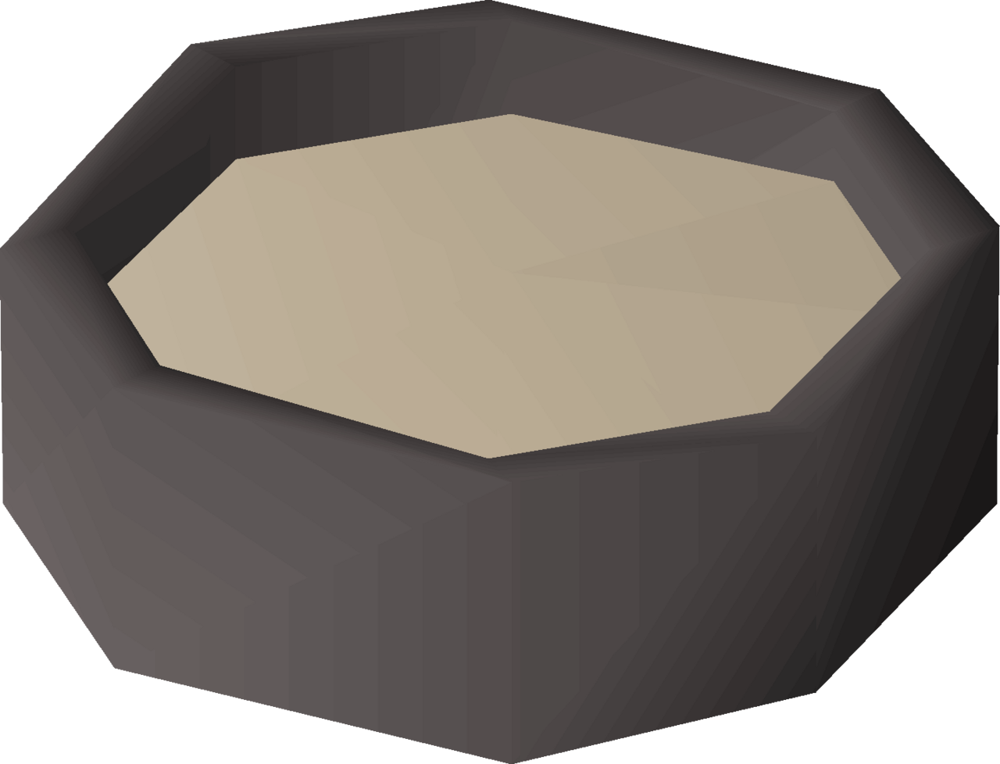

Cake
The perfect addition to Duke Horacio's birthday party!

So you think you've got what it takes to bake a cake!? HA! FOOL! You would have had to successsfully baked 9109 loaves of bread to even think of beginning to think of touching a cake! Nevertheless, I will provide instruction on the off chance that you may someday be capable enough to craft this delicacy!
Settle in young apprentice. It is time to witness mastery.
Ingredients
Directions
- Begin by combing all ingredients with the cake tin. It should be as simple as putting them in a similar proximity so that the wet cake batter magically forms and becomes an uncooked cake!

- Now all you need to do is cook it. Using the same method that I taught you in the bread recipe. Place the uncooked cake in the range careful not to burn it. It should come out a nice brown and white and red?
Congratulations! You've baked yourself a cake. What do you want a medal or something?
HOME